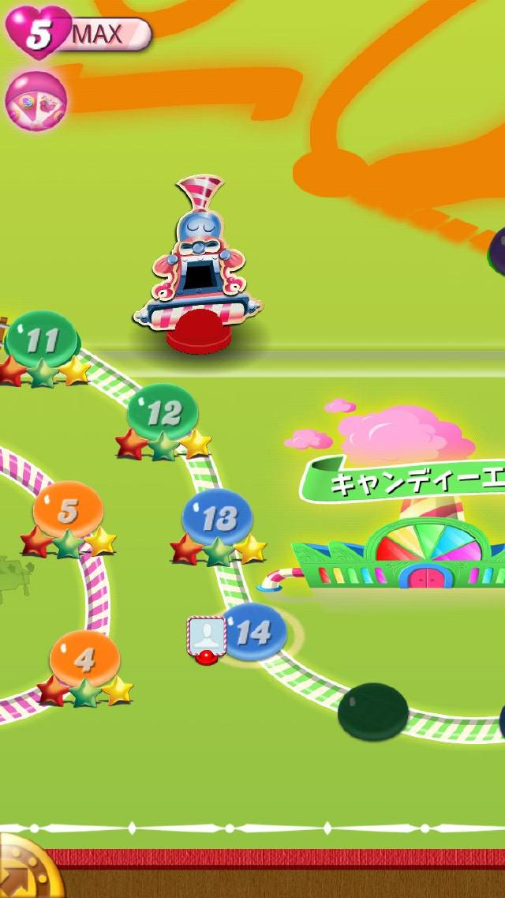
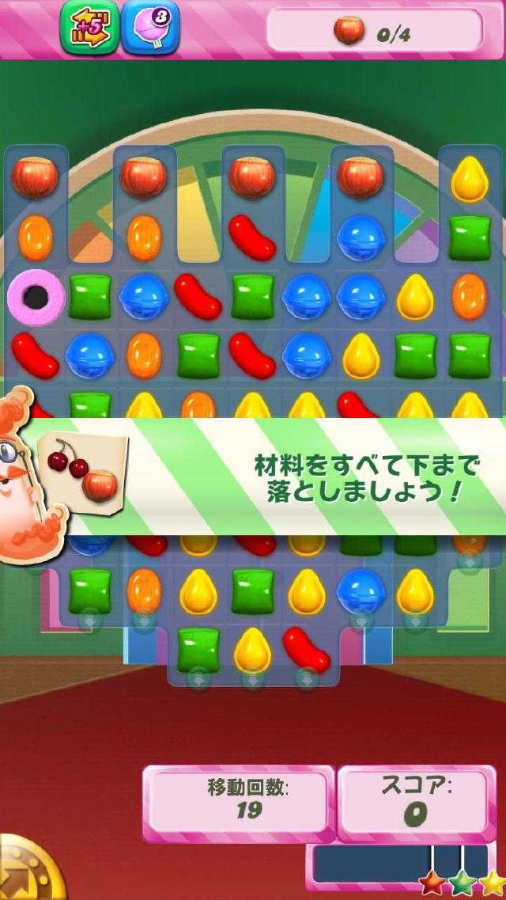
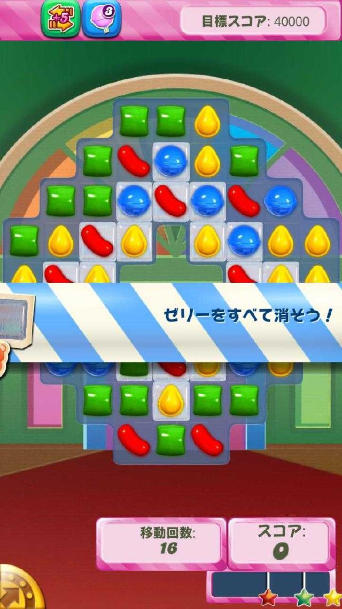
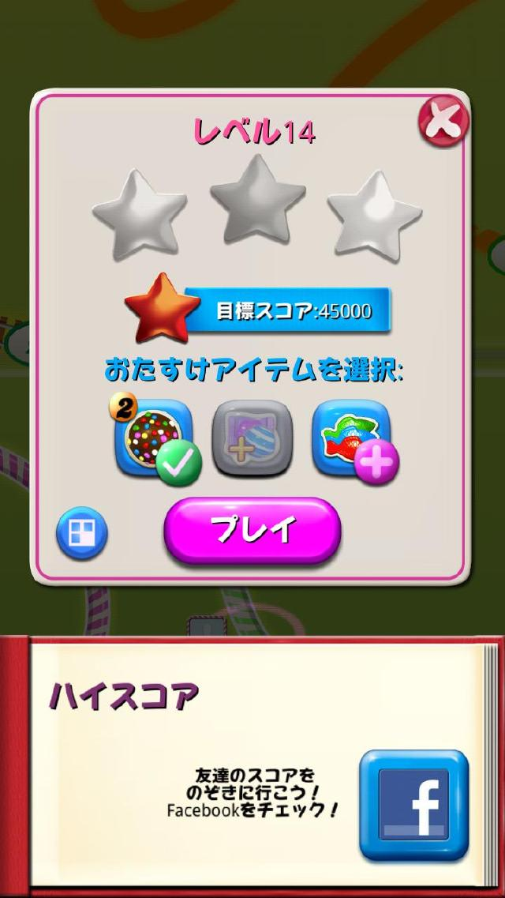
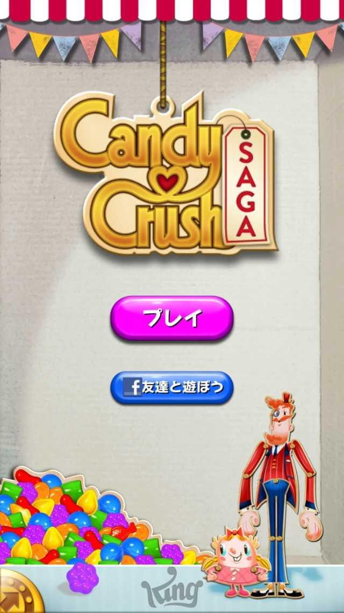

ひとりごと
世界で一番人気のあるスマフォのゲーム－Candy Crush－(2014/01/14)
日本では、スマートフォンのゲームといえば、「パズル＆ドラゴンズ」か 「Line Pop」などの、パズルゲーム、あとは「ブラウザゲーム」などが、GooglePlayのStoreのランキングで上位であったり、東京都内では電車内でやってる人を良く見かけます。
最近、インターネットの記事で、「Candy Crush」というゲームの存在をしりました。
私も試しに小一時間程、プレイしてみました。
～「Line Pop」に似ているようで違うゲーム～
基本的なルールは単純で、スワイプ(タッチパネルではらう動作)をすることによって、縦か横で隣り合ったキャンディを交換し、縦か横に３つ以上揃った場合、そのキャンディは消えるというルールです。
日本ではLine Popが人気があり、基本的にはLine Popのようなゲームと思えばわかりやすいと思います。
Line Popとの大きな違いは、ステージクリア式になっていて、さらにステージ毎に動かせる回数が決まっています。
また、ステージごとに、ブロックの全体の並び方(配列)の形が違う場合もあります。
そして、ステージにはクリア条件(目的)というものが存在し、ただ闇雲にキャンディを消すだけではクリアできないことが特徴です。
他にも、Line Popには無い要素がたくさんあります、だからといってLine Popが面白くない・劣っているというわけではありません。



～優しい課金システム～
このゲームは基本無料なので当然課金要素はあります
が課金しなくても十分楽しめるように配慮されています。
課金で購入したアイテムを使用することでコンテニューを行ったり、攻略を少し楽にすることもできます。
他のソーシャルゲーム同様に、一定時間プレイしなければ、プレイできる回数が補充されるようになっており、課金でプレイ回数を補充することもできます。
～FaceBook連携～
ソーシャルメディアとしてのFacebookと連携しており、登録している友達の進行状況がマップに表示されたりしており、Facebookの仲間がいるほど楽しくなる仕組みもあります。
日本のゲームと世界のゲーム
日本では通称「作業ゲー」と呼ばれる、単純なことを繰り返して、経験値やポイント・ゲーム内マネーなどを貯める必要のあるゲームが人気でありますが、世界では、そうとは限らないようです。
最近は日本語版も発売されて、電車内でもちらほらプレイしている人を見かけますが、Lineアプリやパズドラほどの日本で人気が出るかと思うとかなり微妙な感じがします。
なぜなら、キャラクターが日本向けではないからです。
日本のアニメや、ティズにーのキャラクターに比べると、日本人としては抵抗があるキャラクターだと思います。
しかし、ゲーム性・ゲームの完成度は高く、ゲームそのものが好きで、じっくり考えるパズルが好きなら楽しめること間違いなしでしょう？


プレイするときにアイテムを使用して、攻略を楽にしたり、
日本人受けしないと思う(管理人の感想)キャラクター
公式(Androld) 公式(iphone))
世界中で人気のパズルゲーム」が日本に登場
世界66ヶ国のストアで無料総合ランク1位を獲得！
やり込み要素満載のパズルステージは400以上。

アメリカの子供たちが大好きな人気キャンディースナックの中からおすすめな５種類を集めました。
「食べたことないけど試してみたい！」という人にちょうどいい大きさのお試しセットです。Amazon：￥ 2,880

いろいろな種類のスナックが合わせて約２６０個入っています。
内容量：2.61kg、 アレルギー情報：りんご、オレンジ、小麦、大豆
Amazon：￥ 3,880

6種類のフルーツをアソートしたベーシックなキャンディです。
1袋中約260粒入りです。個包装に賞味期限を印字しております。
パーティーやイベント等の配布用に適しています。
お徳用1kg入りです。Amazon：￥ 958